linux基础总结
Linux 的学习对于一个程序员的重要性是不言而喻的。前端开发相比后端开发，接触 Linux 机会相对较少，因此往往容易忽视它。但是学好它却是程序员必备修养之一。
Linux 基础
操作系统
操作系统 Operating System 简称 OS ，是软件的一部分，它是硬件基础上的第一层软件，是硬件和其它软件沟通的桥梁。
操作系统会控制其他程序运行，管理系统资源，提供最基本的计算功能，如管理及配置内存、决定系统资源供需的优先次序等，同时还提供一些基本的服务程序。
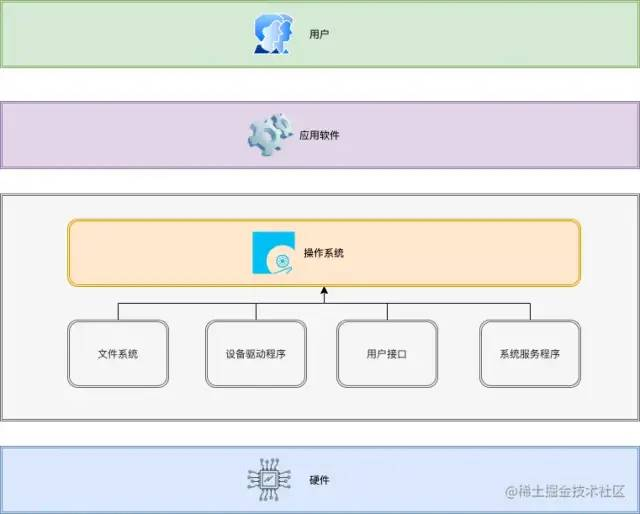
什么是Linux
Linux 系统内核与 Linux 发行套件的区别
-
Linux系统内核指的是由Linus Torvalds负责维护，提供硬件抽象层、硬盘及文件系统控制及多任务功能的系统核心程序。 -
Linux发行套件系统是我们常说的Linux操作系统，也即是由Linux内核与各种常用软件的集合产品。
总结：真正的 Linux 指的是系统内核，而我们常说的 Linux 指的是“发行版完整的包含一些基础软件的操作系统”。
Linux 对比 Windows
- 稳定且有效率；
- 免费（或少许费用）；
- 漏洞少且快速修补；
- 多任务多用户；
- 更加安全的用户与文件权限策略；
- 适合小内核程序的嵌入系统；
- 相对不耗资源。
Linux 系统种类
- 红帽企业版
Linux：RHEL是全世界内使用最广泛的Linux系统。它具有极强的性能与稳定性，是众多生成环境中使用的（收费的）系统。 - Fedora ：由红帽公司发布的桌面版系统套件，用户可以免费体验到最新的技术或工具，这些技术或工具在成熟后会被加入到
RHEL系统中，因此Fedora也成为RHEL系统的试验版本。 - CentOS ：通过把
RHEL系统重新编译并发布给用户免费使用的Linux系统，具有广泛的使用人群。 - Deepin ：中国发行，对优秀的开源成品进行集成和配置。
- Debian ：稳定性、安全性强，提供了免费的基础支持，在国外拥有很高的认可度和使用率。
- Ubuntu ：是一款派生自
Debian的操作系统，对新款硬件具有极强的兼容能力。Ubuntu与Fedora都是极其出色的Linux桌面系统，而且Ubuntu也可用于服务器领域。
终端连接阿里云服务器
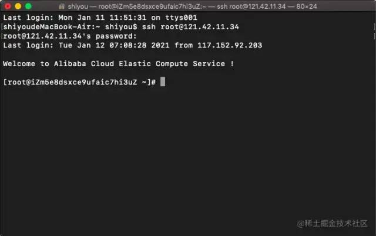
通过执行 ssh root@121.42.11.34 命令，然后输入服务器连接密码就可以顺利登录远程服务器。从现在开始我们就可以在本地电脑操作远程服务器。
- 这个黑色的面板就是终端也就是
Shell（命令行环境）。 ssh root@xxx这是一条命令，必须要在Shell中才能执行。
Shell
Shell 这个单词的原意是“外壳”，跟 kernel（内核）相对应，比喻内核外面的一层，即用户跟内核交互的对话界面。
Shell是一个程序，提供一个与用户对话的环境。这个环境只有一个命令提示符，让用户从键盘输入命令，所以又称为命令行环境（command line interface，简写为CLI）。Shell接收到用户输入的命令，将命令送入操作系统执行，并将结果返回给用户。Shell是一个命令解释器，解释用户输入的命令。它支持变量、条件判断、循环操作等语法，所以用户可以用Shell命令写出各种小程序，又称为Shell脚本。这些脚本都通过Shell的解释执行，而不通过编译。-
Shell是一个工具箱，提供了各种小工具，供用户方便地使用操作系统的功能。
Shell 的种类
Shell 有很多种，只要能给用户提供命令行环境的程序，都可以看作是 Shell 。
历史上，主要的 Shell 有下面这些：
- Bourne Shell（sh）
- Bourne Again shell（bash）
- C Shell（csh）
- TENEX C Shell（tcsh）
- Korn shell（ksh）
- Z Shell（zsh）
- Friendly Interactive Shell（fish）
其中 Bash 是目前最常用的 Shell 。MacOS 中的默认 Shell 就是 Bash 。
通过执行 echo $SHELL 命令可以查看到当前正在使用的 Shell 。还可以通过 cat /etc/shells 查看当前系统安装的所有 Shell 种类。
命令
命令行提示符
进入命令行环境以后，用户会看到 Shell 的提示符。提示符往往是一串前缀，最后以一个美元符号 $ 结尾，用户可以在这个符号后面输入各种命令。
执行一个简单的命令 pwd：
1 | |
命令解析：
root：表示用户名；iZm5e8dsxce9ufaic7hi3uZ：表示主机名；~：表示目前所在目录为家目录，其中root用户的家目录是/root普通用户的家目录在 /home 下；#：指示你所具有的权限（root用户为#，普通用户为$）。- 执行
whoami命令可以查看当前用户名； - 执行
hostname命令可以查看当前主机名；
关于如何创建、切换、删除用户，在后面的用户与权限会具体讲解，这里先使用 root 用户进行演示。
[备注] root 是超级用户，具备操作系统的一切权限。
命令格式
1 | |
长短参数
1 | |
参数值
1 | |
快捷方式
在开始学习 Linux 命令之前，有这么一些快捷方式，是必须要提前掌握的，它将贯穿整个 Linux 使用生涯。
- 通过上下方向键 ↑ ↓ 来调取过往执行过的
Linux命令； - 命令或参数仅需输入前几位就可以用 Tab 键补全；
Ctrl + R：用于查找使用过的命令（history命令用于列出之前使用过的所有命令，然后输入!命令加上编号(!2)就可以直接执行该历史命令）；Ctrl + L：清除屏幕并将当前行移到页面顶部；Ctrl + C：中止当前正在执行的命令；Ctrl + U：从光标位置剪切到行首；Ctrl + K：从光标位置剪切到行尾；Ctrl + W：剪切光标左侧的一个单词；Ctrl + Y：粘贴Ctrl + U | K | Y剪切的命令；Ctrl + A：光标跳到命令行的开头；Ctrl + E：光标跳到命令行的结尾；Ctrl + D：关闭Shell会话；
文件和目录
文件的组织
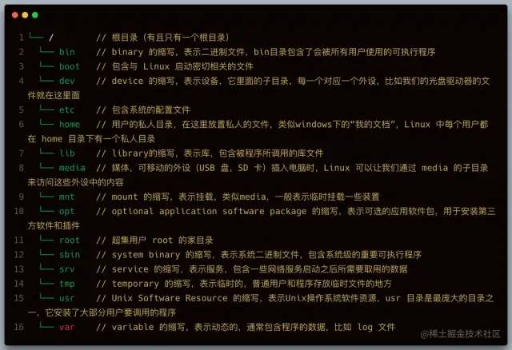
查看路径
pwd****：显示当前目录的路径
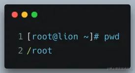
which：查看命令的可执行文件所在路径，Linux 下，每一条命令其实都对应一个可执行程序，在终端中输入命令，按回车的时候，就是执行了对应的那个程序，which 命令本身对应的程序也存在于 Linux 中。
总的来说一个命令就是一个可执行程序。
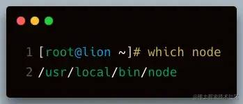
浏览和切换目录
ls****：列出文件和目录，它是 Linux 最常用的命令之一。
【常用参数】
-a显示所有文件和目录包括隐藏的-l显示详细列表-h适合人类阅读的-t按文件最近一次修改时间排序-i显示文件的inode（inode是文件内容的标识）
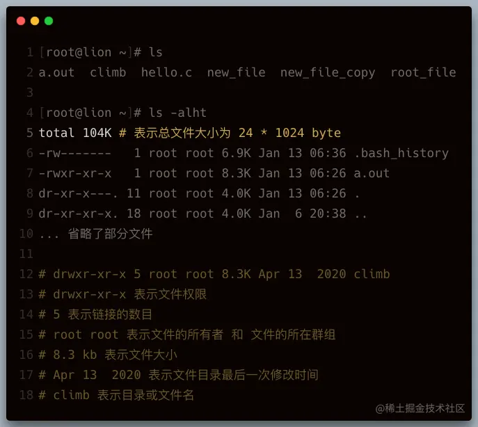
cd：cd 是英语 change directory 的缩写，表示切换目录。
1 | |
[注意] 输入 cd /ho 单次 tab 键会自动补全路径 + 两次 tab 键会列出所有可能的目录列表。
du****：列举目录大小信息。
【常用参数】
-h适合人类阅读的；-a同时列举出目录下文件的大小信息；-s只显示总计大小，不显示具体信息。
浏览和创建文件
cat：一次性显示文件所有内容，更适合查看小的文件。
1 | |
【常用参数】
-n显示行号。
less：分页显示文件内容，更适合查看大的文件。
1 | |
【快捷操作】
- 空格键：前进一页（一个屏幕）；
- b 键：后退一页；
- 回车键：前进一行；
- y 键：后退一行；
- 上下键：回退或前进一行；
- d 键：前进半页；
- u 键：后退半页；
- q 键：停止读取文件，中止
less命令； - = 键：显示当前页面的内容是文件中的第几行到第几行以及一些其它关于本页内容的详细信息；
- h 键：显示帮助文档；
- / 键：进入搜索模式后，按 n 键跳到一个符合项目，按 N 键跳到上一个符合项目，同时也可以输入正则表达式匹配。
head：显示文件的开头几行（默认是10行）
1 | |
【参数】
-n指定行数head cloud-init.log -n 2
tail：显示文件的结尾几行（默认是10行）
1 | |
【参数】
-n指定行数tail cloud-init.log -n 2-f会每过1秒检查下文件是否有更新内容，也可以用 -s 参数指定间隔时间tail -f -s 4 xxx.log
touch：创建一个文件
1 | |
mkdir：创建一个目录
1 | |
【常用参数】
-p递归的创建目录结构mkdir -p one/two/three
文件的复制和移动
cp：拷贝文件和目录
1 | |
【常用参数】
-r递归的拷贝，常用来拷贝一整个目录
mv：移动（重命名）文件或目录，与cp命令用法相似。
1 | |
文件的删除和链接
rm：删除文件和目录，由于 Linux 下没有回收站，一旦删除非常难恢复，因此需要谨慎操作
1 | |
【常用参数】
-i向用户确认是否删除；-f文件强制删除；-r递归删除文件夹，著名的删除操作rm -rf。
ln：英文 Link 的缩写，表示创建链接。
学习创建链接之前，首先要理解链接是什么，我们先来看看 Linux 的文件是如何存储的：
Linux 文件的存储方式分为3个部分，文件名、文件内容以及权限，其中文件名的列表是存储在硬盘的其它地方和文件内容是分开存放的，每个文件名通过 inode 标识绑定到文件内容。
Linux 下有两种链接类型：硬链接和软链接。
硬链接
使链接的两个文件共享同样文件内容，就是同样的 inode ，一旦文件1和文件2之间有了硬链接，那么修改任何一个文件，修改的都是同一块内容，它的缺点是，只能创建指向文件的硬链接，不能创建指向目录的（其实也可以，但比较复杂）而软链接都可以，因此软链接使用更加广泛。
1 | |
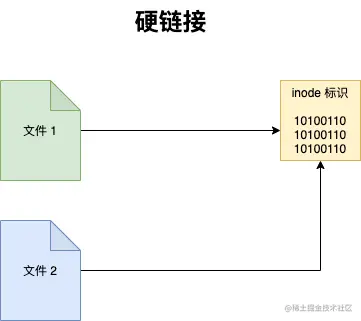
如果我们用 rm file1 来删除 file1 ，对 file2 没有什么影响，对于硬链接来说，删除任意一方的文件，共同指向的文件内容并不会从硬盘上删除。只有同时删除了 file1 与 file2 后，它们共同指向的文件内容才会消失。
软链接
软链接就类似 windows 下快捷方式。
1 | |
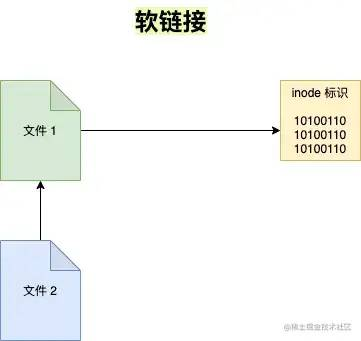
执行 ls -l 命名查看当前目录下文件的具体信息
1 | |
其实 file2 只是 file1 的一个快捷方式，它指向的是 file1 ，所以显示的是 file1 的内容，但其实 file2 的 inode 与 file1 并不相同。如果我们删除了 file2 的话，file1 是不会受影响的，但如果删除 file1 的话， file2 就会变成死链接，因为指向的文件不见了。
**用户与权限
**
用户
Linux 是一个多用户的操作系统。在 Linux 中，理论上来说，我们可以创建无数个用户，但是这些用户是被划分到不同的群组里面的，有一个用户，名叫 root ，是一个很特殊的用户，它是超级用户，拥有最高权限。
自己创建的用户是有限权限的用户，这样大大提高了 Linux 系统的安全性，有效防止误操作或是病毒攻击，但是我们执行的某些命令需要更高权限时可以使用 sudo 命令。
sudo：以 root 身份运行命令
1 | |
useradd + passwd
useradd添加新用户passwd修改用户密码
这两个命令需要 root 用户权限
1 | |
userdel****：删除用户，需要 root 用户权限
1 | |
su：切换用户，需要 root 用户权限
1 | |
群组的管理
Linux 中每个用户都属于一个特定的群组，如果你不设置用户的群组，默认会创建一个和它的用户名一样的群组，并且把用户划归到这个群组。
groupadd：创建群组，用法和 useradd 类似。
1 | |
groupdel：删除一个已存在的群组
1 | |
groups：查看用户所在群组
1 | |
usermod：用于修改用户的账户。
【常用参数】
-l对用户重命名。需要注意的是/home中的用户家目录的名字不会改变，需要手动修改。-g修改用户所在的群组，例如usermod -g friends lion修改lion用户的群组为friends。-G一次性让用户添加多个群组，例如usermod -G friends,foo,bar lion。-a-G会让你离开原先的群组，如果你不想这样做的话，就得再添加-a参数，意味着append追加的意思。
chgrp：用于修改文件的群组。
1 | |
chown：改变文件的所有者，需要 root 身份才能运行。
1 | |
【常用参数】
-R递归设置子目录和子文件，chown -R lion:lion /home/frank把frank文件夹的用户和群组都改为lion。
文件权限管理
chmod：修改访问权限。
1 | |
【常用参数】
-R可以递归地修改文件访问权限，例如chmod -R 777 /home/lion
修改权限的确简单，但是理解其深层次的意义才是更加重要的。下面我们来系统的学习 Linux 的文件权限。
1 | |
其中 drwxr-xr-x 表示文件或目录的权限。让我们一起来解读它具体代表什么？
d：表示目录，就是说这是一个目录，普通文件是 - ，链接是 l 。r：read表示文件可读。w：write表示文件可写，一般有写的权限，就有删除的权限。x：execute表示文件可执行。-：表示没有相应权限。
权限的整体是按用户来划分的，如下图所示：
现在再来理解这句权限 drwxr-xr-x 的意思：
- 它是一个文件夹；
- 它的所有者具有：读、写、执行权限；
- 它的群组用户具有：读、执行的权限，没有写的权限；
- 它的其它用户具有：读、执行的权限，没有写的权限。
现在理解了权限，我们使用 chmod 来尝试修改权限。chmod 它不需要是 root 用户才能运行的，只要你是此文件所有者，就可以用 chmod 来修改文件的访问权限。
数字分配权限
| 权限 | 数字 |
|---|---|
| r | 4 |
| w | 2 |
| x | 1 |
因此要改变权限，只要做一些简单的加法就行：
1 | |
用字母来分配权限
u：user 的缩写，用户的意思，表示所有者。g：group 的缩写，群组的意思，表示群组用户。o：other 的缩写，其它的意思，表示其它用户。a：all 的缩写，所有的意思，表示所有用户。+：加号，表示添加权限。-：减号，表示去除权限。=：等于号，表示分配权限。
1 | |
查找文件
locate：搜索包含关键字的所有文件和目录。后接需要查找的文件名，也可以用正则表达式。
安装locate
1 | |
[注意] locate 命令会去文件数据库中查找命令，而不是全磁盘查找，因此刚创建的文件并不会更新到数据库中，所以无法被查找到，可以执行 updatedb 命令去更新数据库。
find：用于查找文件，它会去遍历你的实际硬盘进行查找，而且它允许我们对每个找到的文件进行后续操作，功能非常强大。
1 | |
- 何处：指定在哪个目录查找，此目录的所有子目录也会被查找。
- 何物：查找什么，可以根据文件的名字来查找，也可以根据其大小来查找，还可以根据其最近访问时间来查找。
- 做什么：找到文件后，可以进行后续处理，如果不指定这个参数， find 命令只会显示找到的文件。
根据文件名查找
1 | |
[注意] find 命令只会查找完全符合 “何物” 字符串的文件，而 locate 会查找所有包含关键字的文件。
根据文件大小查找
1 | |
根据文件最近访问时间查找
1 | |
仅查找目录或文件
1 | |
操作查找结果
1 | |
软件仓库
Linux 下软件是以包的形式存在，一个软件包其实就是软件的所有文件的压缩包，是二进制的形式，包含了安装软件的所有指令。Red Hat 家族的软件包后缀名一般为 .rpm ， Debian 家族的软件包后缀是 .deb 。
Linux 的包都存在一个仓库，叫做软件仓库，它可以使用 yum 来管理软件包， yum 是 CentOS 中默认的包管理工具，适用于 Red Hat 一族。可以理解成 Node.js 的 npm 。
yum 常用命令
yum update | yum upgrade更新软件包yum search xxx搜索相应的软件包yum install xxx安装软件包yum remove xxx删除软件包
切换 CentOS 软件源
有时候 CentOS 默认的 yum 源不一定是国内镜像，导致 yum 在线安装及更新速度不是很理想。这时候需要将 yum 源设置为国内镜像站点。国内主要开源的镜像站点是网易和阿里云。
1、首先备份系统自带 yum 源配置文件 mv /etc/yum.repos.d/CentOS-Base.repo /etc/yum.repos.d/CentOS-Base.repo.backup
2、下载阿里云的 yum 源配置文件到 /etc/yum.repos.d/CentOS7
1 | |
3、生成缓存
1 | |
阅读手册
Linux 命令种类繁杂，我们凭借记忆不可能全部记住，因此学会查用手册是非常重要的。
man
安装更新 man
1 | |
man 手册种类
- 可执行程序或
Shell命令； - 系统调用（ Linux 内核提供的函数）；
- 库调用（程序库中的函数）；
- 文件（例如
/etc/passwd）； - 特殊文件（通常在
/dev下）； - 游戏；
- 杂项（
man(7)，groff(7)）； - 系统管理命令（通常只能被
root用户使用）； - 内核子程序。
man + 数字 + 命令
输入 man + 数字 + 命令/函数，可以查到相关的命令和函数，若不加数字， man 默认从数字较小的手册中寻找相关命令和函数
1 | |
man 手册核心区域解析：(以 man pwd 为例)
1 | |
help
man 命令像新华词典一样可以查询到命令或函数的详细信息，但其实我们还有更加快捷的方式去查询，command --help 或 command -h ，它没有 man 命令显示的那么详细，但是它更加易于阅读。
Linux 进阶
文本操作
grep
全局搜索一个正则表达式，并且打印到屏幕。简单来说就是，在文件中查找关键字，并显示关键字所在行。
基础语法
1 | |
常用参数
-i忽略大小写，grep -i path /etc/profile-n显示行号，grep -i path /etc/profile-v只显示搜索文本不在的那些行，grep -v path /etc/profile-r递归查找，grep -r hello /etc，Linux 中还有一个 rgrep 命令，作用相当于grep -r
高级用法
grep 可以配合正则表达式使用。
1 | |
sort
对文件的行进行排序。
基础语法
1 | |
实例用法
为了演示方便，我们首先创建一个文件 name.txt ，放入以下内容：
1 | |
执行 sort name.txt 命令，会对文本内容进行排序。
常用参数
-o将排序后的文件写入新文件，sort -o name_sorted.txt name.txt；-r倒序排序，sort -r name.txt；-R随机排序，sort -R name.txt；-n对数字进行排序，默认是把数字识别成字符串的，因此 138 会排在 25 前面，如果添加了 -n 数字排序的话，则 25 会在 138 前面。
wc
word count 的缩写，用于文件的统计。它可以统计单词数目、行数、字符数，字节数等。
基础语法
1 | |
实例用法
1 | |
- 第一个13，表示行数；
- 第二个13，表示单词数；
- 第三个91，表示字节数。
常用参数
-l只统计行数，wc -l name.txt；-w只统计单词数，wc -w name.txt；-c只统计字节数，wc -c name.txt；-m只统计字符数，wc -m name.txt。
uniq
删除文件中的重复内容。
基础语法
1 | |
【注意】它只能去除连续重复的行数。
常用参数
-c统计重复行数，uniq -c name.txt；-d只显示重复的行数，uniq -d name.txt。
cut
剪切文件的一部分内容。
基础语法
1 | |
常用参数
-d用于指定用什么分隔符（比如逗号、分号、双引号等等）cut -d , name.txt；-f表示剪切下用分隔符分割的哪一块或哪几块区域，cut -d , -f 1 name.txt。
重定向 管道 流
在 Linux 中一个命令的去向可以有3个地方：终端、文件、作为另外一个命令的入参。
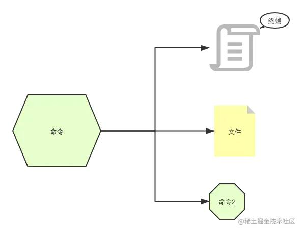
命令一般都是通过键盘输入，然后输出到终端、文件等地方，它的标准用语是 stdin 、 stdout 以及 stderr 。
- 标准输入
stdin，终端接收键盘输入的命令，会产生两种输出； - 标准输出
stdout，终端输出的信息（不包含错误信息）； - 标准错误输出
stderr，终端输出的错误信息。
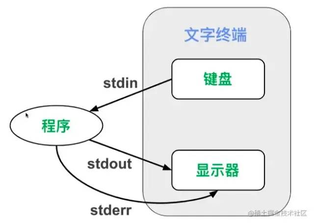
重定向
把本来要显示在终端的命令结果，输送到别的地方（到文件中或者作为其他命令的输入）。
输出重定向 >
> 表示重定向到新的文件，cut -d , -f 1 notes.csv > name.csv ，它表示通过逗号剪切 notes.csv 文件（剪切完有3个部分）获取第一个部分，重定向到 name.csv 文件。
我们来看一个具体示例，学习它的使用，假设我们有一个文件 notes.csv ，文件内容如下：
1 | |
执行命令：cut -d , -f 1 notes.csv > name.csv 最后输出如下内容：
1 | |
【注意】使用 > 要注意，如果输出的文件不存在它会新建一个，如果输出的文件已经存在，则会覆盖。因此执行这个操作要非常小心，以免覆盖其它重要文件。
输出重定向 >>
表示重定向到文件末尾，因此它不会像 > 命令这么危险，它是追加到文件的末尾（当然如果文件不存在，也会被创建）。
再次执行cut -d , -f 1 notes.csv >> name.csv，则会把名字追加到 name.csv 里面。
1 | |
我们平时读的 log 日志文件其实都是用这个命令输出的。
输出重定向 2>
标准错误输出
1 | |
- 当我们
cat一个文件时，会把文件内容打印到屏幕上，这个是标准输出； - 当使用了
> res.txt时，则不会打印到屏幕，会把标准输出写入文件res.txt文件中； 2> errors.log当发生错误时会写入errors.log文件中。
输出重定向 2>>
标准错误输出（追加到文件末尾）同 >> 相似。
输出重定向 2>&1
标准输出和标准错误输出都重定向都一个地方
1 | |
目前为止，我们接触的命令的输入都来自命令的参数，其实命令的输入还可以来自文件或者键盘的输入。
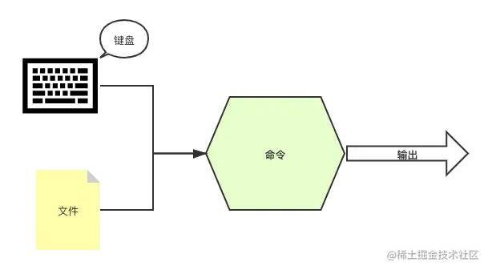
输入重定向 <
< 符号用于指定命令的输入。
1 | |
虽然它的运行结果与 cat name.csv 一样，但是它们的原理却完全不同。
cat name.csv表示cat命令接收的输入是notes.csv文件名，那么要先打开这个文件，然后打印出文件内容。cat < name.csv表示cat命令接收的输入直接是notes.csv这个文件的内容，cat命令只负责将其内容打印，打开文件并将文件内容传递给cat命令的工作则交给终端完成。
输入重定向 <<
将键盘的输入重定向为某个命令的输入。
1 | |
管道 |
把两个命令连起来使用，一个命令的输出作为另外一个命令的输入，英文是 pipeline ，可以想象一个个水管连接起来，管道算是重定向流的一种。
举几个实际用法案例：
1 | |
流
流并非一个命令，在计算机科学中，流 stream 的含义是比较难理解的，记住一点即可：流就是读一点数据, 处理一点点数据。其中数据一般就是二进制格式。上面提及的重定向或管道，就是把数据当做流去运转的。
到此我们就接触了，流、重定向、管道等 Linux 高级概念及指令。其实你会发现关于流和管道在其它语言中也有广泛的应用。Angular 中的模板语法中可以使用管道。Node.js 中也有 stream 流的概念。
查看进程
在 Windows 中通过 Ctrl + Alt + Delete 快捷键查看软件进程。
w
帮助我们快速了解系统中目前有哪些用户登录着，以及他们在干什么。
1 | |
ps
用于显示当前系统中的进程， ps 命令显示的进程列表不会随时间而更新，是静态的，是运行 ps 命令那个时刻的状态或者说是一个进程快照。
基础语法
1 | |
常用参数
-ef列出所有进程；-efH以乔木状列举出所有进程；-u列出此用户运行的进程；-aux通过CPU和内存使用来过滤进程ps -aux | less;-aux --sort -pcpu按CPU使用降序排列，-aux --sort -pmem表示按内存使用降序排列;-axjf以树形结构显示进程，ps -axjf它和pstree效果类似。
top
获取进程的动态列表。
1 | |
top - 07:20:07 up 25 days, 10:41, 1 user, load average: 0.30, 0.10, 0.07相当w命令的第一行的信息。- 展示的这些进程是按照使用处理器
%CPU的使用率来排序的。
kill
结束一个进程，kill + PID 。
1 | |
管理进程
进程状态
主要是切换进程的状态。我们先了解下 Linux 下进程的五种状态：
- 状态码 R ：表示正在运行的状态；
- 状态码 S ：表示中断（休眠中，受阻，当某个条件形成后或接受到信号时，则脱离该状态）；
- 状态码 D ：表示不可中断（进程不响应系统异步信号，即使用kill命令也不能使其中断）；
- 状态码 Z ：表示僵死（进程已终止，但进程描述符依然存在，直到父进程调用 wait4() 系统函数后将进程释放）；
- 状态码 T ：表示停止（进程收到 SIGSTOP 、 SIGSTP 、 SIGTIN 、 SIGTOU 等停止信号后停止运行）。
前台进程 & 后台进程
默认情况下，用户创建的进程都是前台进程，前台进程从键盘读取数据，并把处理结果输出到显示器。例如运行 top 命令，这就是一个一直运行的前台进程。
后台进程的优点是不必等待程序运行结束，就可以输入其它命令。在需要执行的命令后面添加 & 符号，就表示启动一个后台进程。
&
启动后台进程，它的缺点是后台进程与终端相关联，一旦关闭终端，进程就自动结束了。
1 | |
nohup
使进程不受挂断（关闭终端等动作）的影响。
1 | |
nohup 命令也可以和 & 结合使用。
1 | |
bg
使一个“后台暂停运行”的进程，状态改为“后台运行”。
1 | |
实际案例1：
1 | |
实际案例2：
1 | |
jobs
显示当前终端后台进程状态。
fg
fg 使进程转为前台运行，用法和 bg 命令类似。
我们用一张图来表示前后台进程切换：
我们可以使程序在后台运行，成为后台进程，这样在当前终端中我们就可以做其他事情了，而不必等待此进程运行结束。
守护进程
一个运行起来的程序被称为进程。在 Linux 中有些进程是特殊的，它不与任何进程关联，不论用户的身份如何，都在后台运行，这些进程的父进程是 PID 为1的进程， PID 为1的进程只在系统关闭时才会被销毁。它们会在后台一直运行等待分配工作。我们将这类进程称之为守护进程 daemon 。
守护进程的名字通常会在最后有一个 d ，表示 daemon 守护的意思，例如 systemd 、httpd 。
systemd
systemd 是一个 Linux 系统基础组件的集合，提供了一个系统和服务管理器，运行为 PID 1 并负责启动其它程序。
通过命令也可以看到 PID 为1的进程就是 systemd 的系统进程。
systemd 常用命令（它是一组命令的集合）：
1 | |
文件压缩解压
- 打包：是将多个文件变成一个总的文件，它的学名叫存档、归档。
- 压缩：是将一个大文件（通常指归档）压缩变成一个小文件。
我们常常使用 tar 将多个文件归档为一个总的文件，称为 archive 。然后用 gzip 或 bzip2 命令将 archive 压缩为更小的文件。
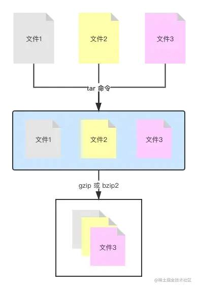
tar
创建一个 tar 归档。
基础用法
1 | |
常用参数
-cvf表示 create（创建）+ verbose（细节）+ file（文件），创建归档文件并显示操作细节；-tf显示归档里的内容，并不解开归档；-rvf追加文件到归档，tar -rvf archive.tar file.txt；-xvf解开归档，tar -xvf archive.tar。
gzip / gunzip
“压缩/解压”归档，默认用 gzip 命令，压缩后的文件后缀名为 .tar.gz 。
tar 归档+压缩
可以用 tar 命令同时完成归档和压缩的操作，就是给 tar 命令多加一个选项参数，使之完成归档操作后，还是调用 gzip 或 bzip2 命令来完成压缩操作。
zcat、zless、zmore
之前讲过使用 cat less more 可以查看文件内容，但是压缩文件的内容是不能使用这些命令进行查看的，而要使用 zcat、zless、zmore 进行查看。
zip/unzip
“压缩/解压” zip 文件（ zip 压缩文件一般来自 windows 操作系统）。
命令安装
1 | |
基础用法
1 | |
编译安装软件
之前我们学会了使用 yum 命令进行软件安装，如果碰到 yum 仓库中没有的软件，我们就需要会更高级的软件安装“源码编译安装”。
编译安装
简单来说，编译就是将程序的源代码转换成可执 yum 行文件的过程。大多数 Linux 的程序都是开放源码的，可以编译成适合我们的电脑和操纵系统属性的可执行文件。
基本步骤如下：
- 下载源代码
- 解压压缩包
- 配置
- 编译
- 安装
实际案例
1、下载
我们来编译安装 htop 软件，首先在它的官网下载源码：https://bintray.com/htop/source/htop#files
下载好的源码在本机电脑上使用如下命令同步到服务器上：
1 | |
也可以使用 wegt 进行下载：
1 | |
2、解压文件
1 | |
3、配置
执行 ./configure ，它会分析你的电脑去确认编译所需的工具是否都已经安装了。
4、编译
执行 make 命令
5、安装
执行 make install 命令，安装完成后执行 ls /usr/local/bin/ 查看是否有 htop 命令。如果有就可以执行 htop 命令查看系统进程了。
网络
ifconfig
查看 ip 网络相关信息，如果命令不存在的话， 执行命令 yum install net-tools 安装。
参数解析：
eth0对应有线连接（对应你的有线网卡），就是用网线来连接的上网。eth是 Ethernet 的缩写，表示“以太网”。有些电脑可能同时有好几条网线连着，例如服务器，那么除了eth0，你还会看到eth1、eth2等。lo表示本地回环（ Local Loopback 的缩写，对应一个虚拟网卡）可以看到它的 ip 地址是 127.0.0.1 。每台电脑都应该有这个接口，因为它对应着“连向自己的链接”。这也是被称之为“本地回环”的原因。所有经由这个接口发送的东西都会回到你自己的电脑。看起来好像并没有什么用，但有时为了某些缘故，我们需要连接自己。例如用来测试一个网络程序，但又不想让局域网或外网的用户查看，只能在此台主机上运行和查看所有的网络接口。例如在我们启动一个前端工程时，在浏览器输入 127.0.0.1:3000 启动项目就能查看到自己的 web 网站，并且它只有你能看到。wlan0表示无线局域网（上面案例并未展示）。
host
ip 地址和主机名的互相转换。
软件安装
1 | |
基础用法
1 | |
ssh 连接远程服务器
通过非对称加密以及对称加密的方式（同 HTTPS 安全连接原理相似）连接到远端服务器。
1 | |
配置 ssh
config 文件可以配置 ssh ，方便批量管理多个 ssh 连接。
配置文件分为以下几种：
- 全局
ssh服务端的配置：/etc/ssh/sshd_config； - 全局
ssh客户端的配置：/etc/ssh/ssh_config（很少修改）； - 当前用户
ssh客户端的配置：~/.ssh/config。
【服务端 config 文件的常用配置参数】
| 服务端 config 参数 | 作用 |
|---|---|
| Port | sshd 服务端口号（默认是22） |
| PermitRootLogin | 是否允许以 root 用户身份登录（默认是可以） |
| PasswordAuthentication | 是否允许密码验证登录（默认是可以） |
| PubkeyAuthentication | 是否允许公钥验证登录（默认是可以） |
| PermitEmptyPasswords | 是否允许空密码登录（不安全，默认不可以） |
[注意] 修改完服务端配置文件需要重启服务 systemctl restart sshd
【客户端 config 文件的常用配置参数】
| 客户端 config 参数 | 作用 |
|---|---|
| Host | 别名 |
| HostName | 远程主机名（或 IP 地址） |
| Port | 连接到远程主机的端口 |
| User | 用户名 |
配置当前用户的 config ：
1 | |
这样配置完成后，下次登录时，可以这样登录 ssh lion 会自动识别为 root 用户。
[注意] 这段配置不是在服务器上，而是你自己的机器上，它仅仅是设置了一个别名。
免密登录
ssh 登录分两种，一种是基于口令（账号密码），另外一种是基于密钥的方式。
基于口令，就是每次登录输入账号和密码，显然这样做是比较麻烦的，今天主要学习如何基于密钥实现免密登录。
基于密钥验证原理
客户机生成密钥对（公钥和私钥），把公钥上传到服务器，每次登录会与服务器的公钥进行比较，这种验证登录的方法更加安全，也被称为“公钥验证登录”。
具体实现步骤
1、在客户机中生成密钥对（公钥和私钥） ssh-keygen（默认使用 RSA 非对称加密算法）
运行完 ssh-keygen 会在 ~/.ssh/ 目录下，生成两个文件：
id_rsa.pub：公钥id_rsa：私钥
2、把客户机的公钥传送到服务
执行 ssh-copy-id root@172.x.x.x（ssh-copy-id 它会把客户机的公钥追加到服务器 ~/.ssh/authorized_keys 的文件中）。
执行完成后，运行 ssh root@172.x.x.x 就可以实现免密登录服务器了。
配合上面设置好的别名，直接执行 ssh lion 就可以登录，是不是非常方便。
wget
可以使我们直接从终端控制台下载文件，只需要给出文件的HTTP或FTP地址。
1 | |
wget 非常稳定，如果是由于网络原因下载失败，wget 会不断尝试，直到整个文件下载完毕。
常用参数
-c继续中断的下载。
备份
scp
它是 Secure Copy 的缩写，表示安全拷贝。scp 可以使我们通过网络，把文件从一台电脑拷贝到另一台电脑。
scp 是基于 ssh 的原理来运作的，ssh 会在两台通过网络连接的电脑之间创建一条安全通信的管道，scp 就利用这条管道安全地拷贝文件。
其中source_file 和destination_file 都可以这样表示：user@ip:file_name，user 是登录名，ip是域名或ip地址。 file_name 是文件路径。
rsync
rsync 命令主要用于远程同步文件。它可以同步两个目录，不管它们是否处于同一台电脑。它应该是最常用于“增量备份”的命令了。它就是智能版的 scp 命令。
软件安装
1 | |
基础用法
1 | |
常用参数
-a保留文件的所有信息，包括权限，修改日期等；-r递归调用，表示子目录的所有文件也都包括；-v冗余模式，输出详细操作信息。
默认地，rsync 在同步时并不会删除目标目录的文件，例如你在源目录中删除一个文件，但是用 rsync 同步时，它并不会删除同步目录中的相同文件。如果向删除也可以这么做：rsync -arv --delete Images/ backups/ 。
系统
halt
关闭系统，需要 root 身份。
1 | |
reboot
重启系统，需要 root 身份。
1 | |
poweroff
直接运行即可关机，不需要 root 身份。
Vim 编译器
Vim 是什么？
Vim 是从 vi 发展出来的一个文本编辑器。其代码补完、编译及错误跳转等方便编程的功能特别丰富，在程序员中被广泛使用。和 Emacs 并列成为类 Unix 系统用户最喜欢的编辑器。
Vim 常用模式
- 交互模式
- 插入模式
- 命令模式
- 可视模式
交互模式
也成为正常模式，这是 Vim 的默认模式，每次运行 Vim 程序的时候，就会进入这个模式。
例如执行 vim name.txt 则会进入交互模式。
交互模式特征：
- 在这个模式下，你不能输入文本；
- 它可以让我们在文本间移动，删除一行文本，复制黏贴文本，跳转到指定行，撤销操作，等等。
插入模式
这个模式是我们熟悉的文本编辑器的模式，就是可以输入任何你想输入的内容。进入这个模式有几种方法，最常用的方法是按字母键 i （ i、I、a、A、o、O 都可以进入插入模式，只是所处的位置不同），退出这种模式，只需要按下 Esc 键。
i, I进入输入模式 Insert mode ：i为“从目前光标所在处输入”，I为“在目前所在行的第一个非空格符处开始输入”；a, A进入输入模式 Insert mode ：a为“从目前光标所在的下一个字符处开始输入”，A为“从光标所在行的最后一个字符处开始输入”；o, O进入输入模式 Insert mode ：o为“在目前光标所在的下一行处输入新的一行”；O为在目前光标所在处的上一行输入新的一行。
命令模式
命令模式也称为底线命令模式，这个模式下可以运行一些命令例如“退出”，“保存”，等动作。
也可以用这个模式来激活一些 Vim 配置，例如语法高亮，显示行号，等。甚至还可以发送一些命令给终端命令行，例如 ls 、cp 。
为了进入命令模式，首先要进入交互模式，再按下冒号键。
用一张图表示三种模式如何切换：
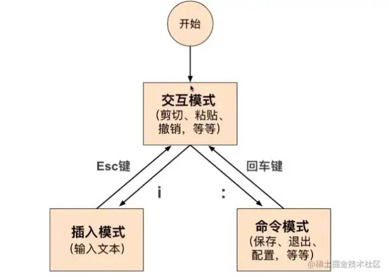
基本操作
打开 Vim
在终端命令行中输入 vim 回车后 Vim 就会被运行起来，也可以用 Vim 来打开一个文件，只需要在 vim 后面再加文件名。如 vim file.name ，如果文件不存在，那么会被创建。
插入
进入文件之后，此时处于交互模式，可以通过输入 i 进入插入模式。
移动
在 Vim 的交互模式下，我们可以在文本中移动光标。
- h 向左移动一个字符
- j 向下移动一个字符
- k 向上移动一个字符
- i 向右移动一个字符
当然也可以使用四个方向键进行移动，效果是一样的。
跳至行首和行末
- 行首：在交互模式下，为了将光标定位到一行的开始位置，只需要按下数字键 0 即可，键盘上的 Home 键也有相同效果。
- 行末：在交互模式下，为了将光标定位到一行的末尾，只需要按下美元符号键
$即可，键盘上的 End 键也有相同效果。
按单词移动
在交互模式下，按字母键 w 可以一个单词一个单词的移动。
退出文件
在交互模式下，按下冒号键 : 进入命令模式，再按下 q 键，就可以退出了。
如果在退出之前又修改了文件，就直接想用 :q 退出 Vim ，那么 Vim 会显示一个红字标明错误信息。此时我们有两个选择：
- 保存并退出
:wq或:x； - 不保存且退出
:q!。
标准操作
删除字符
在交互模式下，将光标定位到一个你想要删除的字符上，按下字母键 x 你会发现这个字符被删除了。
也可以一次性删除多个字符，只需要在按 x 键之前输入数字即可。
删除（剪切）单词，行
- 删除一行：连按两次
d来删除光标所在的那一行。 - 删除多行：例如先输入数字 2 ，再按下
dd，就会删除从光标所在行开始的两行。 - 删除一个单词：将光标置于一个单词的首字母处，然后按下
dw。 - 删除多个单词：例如先按数字键 2 再按
dw就可以删除两个单词了。 - 从光标所在位置删除至行首：
d0。 - 从光标所在位置删除至行末：
d$。
复制单词，行
- 复制行：按两次
y会把光标所在行复制到内存中，和dd类似，dd用于“剪切”光标所在行。 - 复制单词：
yw会复制一个单词。 - 复制到行末：
y$是复制从光标所在处到行末的所有字符。 - 复制到行首：
y0是复制光标所在处到行首的所有字符。
粘贴
如果之前用 dd 或者 yy 剪切复制过来的，可以使用 p 来粘贴。同样也可以使用 数字+p 来表示复制多次。
替换一个字符
在交互模式下，将光标置于想要替换的字符上。按下 r 键，接着输入你要替换的字符即可。
撤销操作
如果要撤销最近的修改，只需要按下 u 键，如果想要撤销最近四次修改，可以按下4，再按下 u 。
重做
取消撤销，也就是重做之前的修改使用 ctrl + r 。
跳转到指定行
Vim 编辑的文件中，每一行都有一个行号，行号从1开始，逐一递增。
行号默认是不显示，如果需要它显示的话，可以进入命令模式，然后输入 set nu ，如果要隐藏行号的话，使用 set nonu 。
- 跳转到指定行：
数字+gg，例如7gg，表示跳转到第7行。 - 要跳转到最后一行，按下
G。 - 要跳转到第一行，按下
gg。
高级操作
查找
处于交互模式下，按下 / 键，那么就进入查找模式，输入你要查找的字符串，然后按下回车。光标就会跳转到文件中下一个查找到的匹配处。如果字符串不存在，那么会显示 "pattern not found" 。
n跳转到下一个匹配项；N跳转到上一个匹配项。
[注意] 用斜杠来进行的查找是从当前光标处开始向文件尾搜索，如果你要从当前光标处开始，向文件头搜索则使用 ? ，当然也可以先按下 gg 跳转到第一行在进行全文搜索。
查找并替换
替换光标所在行第一个匹配的字符串：
1 | |
替换光标所在行所有旧字符串为新字符串：
1 | |
替换第几行到第几行中所有字符串：
1 | |
最常用的就是全文替换了：
1 | |
合并文件
可以用冒号 +r ( :r ) 实现在光标处插入一个文件的内容。
1 | |
分屏
Vim 有一个特别便捷的功能那就是分屏，可以同时打开好几个文件，分屏之后，屏幕每一块被称为一个 viewport ，表示“视口”。
- 横向分屏 : sp 文件名
- 垂直分屏 : vsp 文件名
分屏模式下的快捷键
Ctrl + w再加Ctrl + w，表示从一个 viewport 移动光标到另外一个 viewport ；Ctrl + w再加 “方向键”，就可以移动到这个方向所处的下一个视口了；Ctrl + w再加+号，表示扩大当前视口；Ctrl + w再加-号，表示缩小当前视口；Ctrl + w再加=号，表示平均当前视口；Ctrl + w再加r键，会反向调换视口位置；Ctrl + w再加q键，会关闭当前视口；Ctrl + w再加o键，会关闭除当前视口以外的所有视口；
运行外部命令 :!
在 Vim 中可以运行一些终端命令，只要先输入 :! ，然后接命令名称。
例如：
1 | |
可视模式
前面只讲了 Vim 的三种模式，其实还有一种模式叫做可视模式。
进入它的三种方式（都是从交互模式开始）：
v字符可视模式，进入后配合方向键选中字符后，然后再按d键可以删除选中。V行可视模式，进入后光标所在行默认被选中，然后再按d键可以删除所在行。Ctrl + v块可视模式，它是可视模式最有用的功能了，配合d和I键可以实现删除选中的内容和插入内容。
同时选中多行，并在选中行头部插入内容的具体操作步骤：
1 | |
进入可视模式之后的操作键：
d键，表示删除选中；I键，表示在选中之前插入；u键，表示选中变为小写；U键，表示选中变为大写；
Vim 配置
选项参数
在 Vim 被启动后，可以运行一些指令来激活一些选项参数，但是这些选项参数的配置在退出 Vim 时会被忘记，例如前面讲解的激活行号。如果希望所在的配置是永久性的，那么需要在家目录（ cd ~ ）创建一个 Vim 的配置文件 .vimrc 。
.vimrc
Vim 配置非常丰富，我们可以通过个性化配置把 Vim 打造成属于自己的 IDE 等等。在 github 上也可以搜索到一些强大的 Vim 配置文件。
本博客所有文章除特别声明外，均采用 CC BY-SA 4.0 协议 ，转载请注明出处！